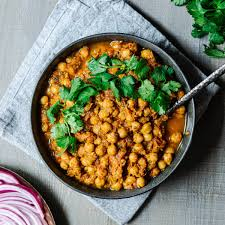

Home
Chana Masala

Description
Chana Masala is a flavorful and spicy North Indian dish made with chickpeas (chana) cooked in a rich, aromatic tomato-based gravy.
This hearty dish is packed with warm spices like cumin, coriander, and garam masala, giving it a bold and satisfying taste.
Chana Masala is a popular street food in India and is often served with bhature (deep-fried bread), rice, or roti. Its a
protein-rich, vegan-friendly dish that’s easy to make and perfect for a wholesome meal.
Ingredients
For Cooking the Chickpeas:
- 1 cup dried chickpeas (or 1 can cooked chickpeas)
- 3 cups water
- ½ teaspoon salt
- 1 bay leaf
For the Masala Gravy:
- 2 tablespoons oil or ghee
- 1 teaspoon cumin seeds
- 1 onion, finely chopped
- 2 cloves garlic, minced
- 1-inch ginger, grated
- 2 tomatoes, pureed
- 1 green chili, chopped (optional)
- 1 teaspoon coriander powder
- ½ teaspoon turmeric powder
- 1 teaspoon garam masala
- ½ teaspoon red chili powder
- ½ teaspoon cumin powder
- ½ teaspoon salt (adjust to taste)
- ½ teaspoon amchur (dry mango powder) (optional)
- 2 tablespoons chopped coriander leaves (for garnish)
Steps
Cooking the Chickpeas:
- If using dried chickpeas, soak them overnight in water. Drain and rinse before cooking.
- In a pressure cooker or pot, add the soaked chickpeas, water, salt, and bay leaf.
- If using a pressure cooker, cook for 4-5 whistles. If using a regular pot, cook until soft (about 45 minutes).
- Drain the chickpeas and save some of the cooking water for the gravy.
Making the Masala Gravy:
- Heat oil or ghee in a pan over medium heat.
- Add cumin seeds and let them crackle.
- Add chopped onions and sauté until golden brown.
- Stir in garlic, ginger, and green chili and cook for another minute.
- Add pureed tomatoes and cook until the oil separates from the masala (about 5-7 minutes).
- Add coriander powder, turmeric, garam masala, red chili powder, cumin powder, and salt. Stir well.
Combining Chickpeas with Masala:
- Add the cooked chickpeas to the pan along with ½ cup of the reserved chickpea water.
- Stir well and let it simmer for 10-15 minutes, allowing the flavors to blend.
- Add amchur powder (if using) and mix well.
Serving:
Garnish with fresh coriander leaves and serve hot with rice, roti, or bhature. Enjoy your delicious Chana Masala!